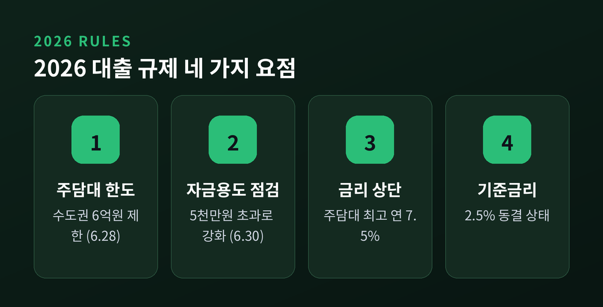
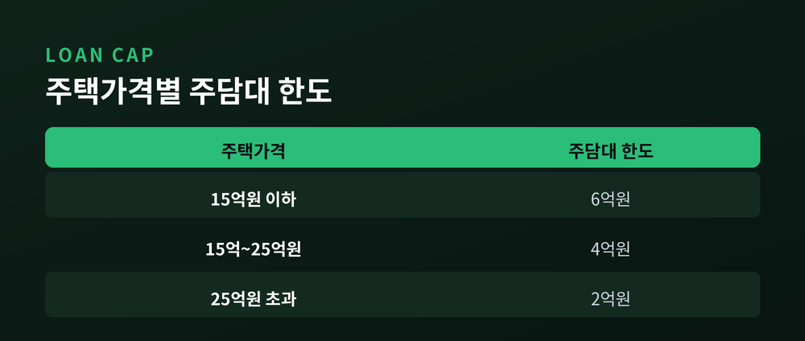
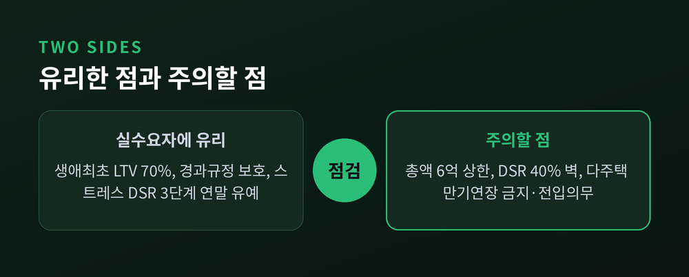

대출 규제 강화 2026
주담대 금리·자금용도 점검 총정리

이번 글에서는 2026년 상반기에 달라진 대출 규제를 정리해 보겠습니다.
주택담보대출 금리부터 사업자대출 자금용도 점검, 그리고 실수요자가 짚어야 할 부분까지 한자리에 모았습니다.
숫자와 제도는 공개된 사실 정보만 담았습니다.
한눈에 보는 2026년 대출 규제
핵심부터 짚겠습니다.
먼저 6월 28일부터 수도권·규제지역 주택구입 목적의 주담대 한도가 6억원으로 제한됩니다.
6월 30일부터는 개인사업자대출의 자금용도 사후점검 기준이 1억원에서 5,000만원으로 내려갑니다.
주담대 금리 상단은 6월 기준 최고 연 7.5%까지 올랐습니다.
기준금리는 5월 회의에서 2.5%로 동결된 상태입니다.

주택담보대출 금리, 어디까지 올랐나
지난해 말 5대 은행 5년 고정형 주담대 금리 상단은 6.23%였습니다.
2026년 6월에는 7.32%까지 올랐습니다.
5개월여 만에 1%포인트 넘게 상승한 셈입니다.
변동형 금리는 6월 기준 4.05%부터 시작합니다.
고정형이 가파르게 오르면서 변동형을 찾는 수요가 늘고 있습니다.
'주담대 8%'라는 말도 들립니다.
다만 이는 한국은행이 기준금리 인상에 본격적으로 나설 경우의 우려이자 관측입니다.
현재 확정된 수치는 아니며, 상단은 약 7.32~7.5% 수준입니다.
영끌·빚투 차주에게는 부담이 커질 수 있는 흐름인 것은 분명합니다.
사업자대출 자금용도 점검 강화
6월 30일부터 개인사업자대출의 자금용도 사후점검 기준이 달라집니다.
사업자대출을 받아 주택 구입이나 부동산 투자에 쓰는 '용도외 유용'을 막기 위한 조치입니다.
예전에는 1억원 초과분이 점검 대상이었습니다.
앞으로는 5,000만원만 넘어도 자금 사용처를 사후에 점검받게 됩니다.
점검 대상 범위가 크게 넓어진 것입니다.
적발 시 패널티도 강화됩니다.
용도외 유용이 드러나면 즉각적인 대출 회수 조치가 가능합니다.
신규 사업자대출 취급 금지 기간도 현행 1년·5년에서 3년·10년으로 확대될 방침입니다.
개인사업자는 사업자대출뿐 아니라 가계대출 신규 취급도 제한됩니다.
실제로 금감원은 3월 30일부터 전 금융권 현장점검을 진행 중입니다.
운전자금대출로 규제지역 주택을 산 사례, 임대사업자대출 후 본인이 전입해 거주한 사례 등이 적발됐습니다.
2021년 이후 취급된 만기 미도래 대출까지 전면 점검 대상입니다.
대출 목적과 자금 사용 증빙을 명확히 남겨 두시길 권합니다.
정부의 부동산·대출 규제 흐름
2026년 4월 1일 금융위원회는 가계부채 관리방안을 발표했습니다.
정책 목표는 '부동산 시장과 금융의 절연'으로 제시됐습니다.
가계대출 증가율 관리목표는 전년 1.7%에서 1.5%로 강화됐습니다.
6.28 조치의 핵심은 주담대 한도 차등화입니다.
주택가격에 따라 한도가 달라집니다.
| 주택가격 | 주담대 한도 |
|---|---|
| 15억원 이하 | 6억원 |
| 15억~25억원 | 4억원 |
| 25억원 초과 | 2억원 |

이와 함께 주택 구입 시 전입의무가 부과되고, 생애최초 주택구입 목적 주담대 규제도 강화됩니다.
다주택자·임대사업자의 수도권·규제지역 아파트 담보대출은 4월 17일부터 만기연장이 원칙적으로 금지됐습니다.
기준금리 방향은 견해가 갈립니다.
다수 전망은 하반기부터 인상 사이클에 진입해 최종 3.50%에 이른다고 봅니다.
반면 인하 가능성을 제시하는 견해도 존재합니다.
5월 현재는 2.5% 동결 상태이며, 시장 전망이 한쪽으로 확정된 것은 아닙니다.
실수요자가 짚어야 할 점
좋은 소식과 주의할 점을 함께 보겠습니다.
생애최초 주택구입자는 규제지역에서도 LTV 최대 70%가 적용됩니다.
일반 주담대 40% 수준보다 완화된 조건입니다.
다만 대출 총액 상한은 6억원입니다.
이미 매매·전세 계약을 체결했거나 대출 신청 접수를 마친 차주에게는 경과규정이 적용됩니다.
규제 시행일 전후의 계약 시점이 적용 여부를 가릅니다.
그래서 계약·접수 시점 확인이 중요합니다.
한 가지 더 유의할 부분이 있습니다.
LTV를 통과해도 DSR 40% 규제에서 막히는 경우가 적지 않습니다.
다만 지방 주담대 부담 완화 차원에서 스트레스 DSR 3단계 적용은 연말까지 유예됐습니다.

정리하면 이렇습니다.
규제는 '부동산으로 흘러가는 돈'을 조이고, 실수요자는 경과규정으로 보호하는 방향으로 움직이고 있습니다.
금리는 오르고, 자금용도 점검은 촘촘해졌습니다.
핵심은 하나입니다 — "본인이 어느 규제에 해당하는지부터 정확히 확인하는 것."
시행일과 경과규정 기준일, DSR 한도, 자금 사용 증빙.
이 네 가지를 차분히 점검하신다면, 달라진 규칙 속에서도 길을 잃지 않으실 것입니다.
※ 이 글은 공개된 제도·사실 정보를 정리한 것입니다. 구체적인 투자·대출 결정은 본인 판단과 전문가 상담을 거치시길 권합니다.